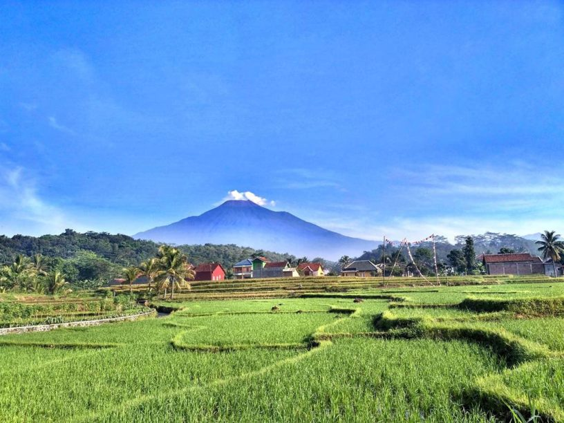
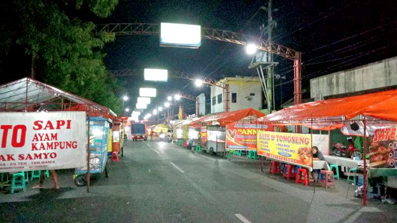
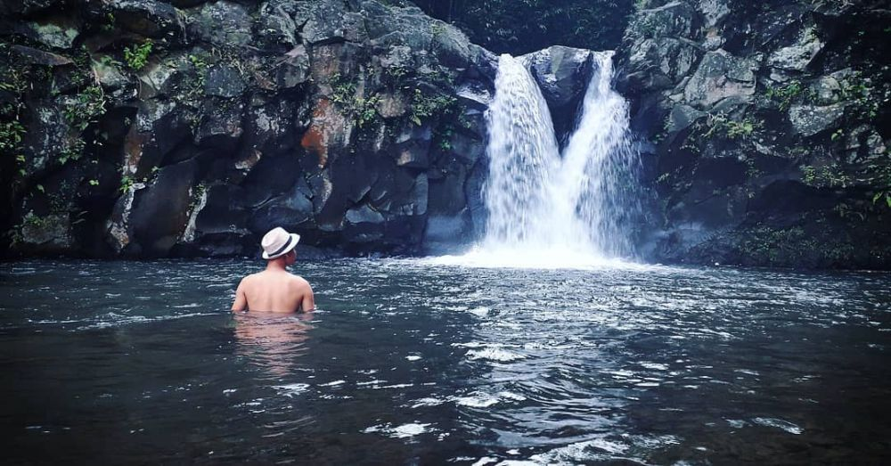
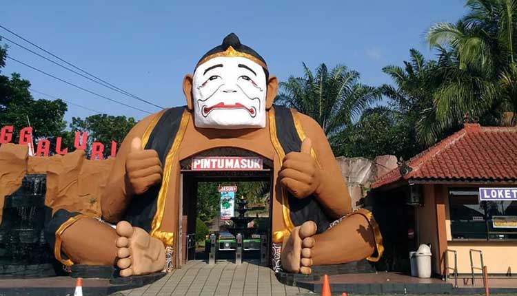
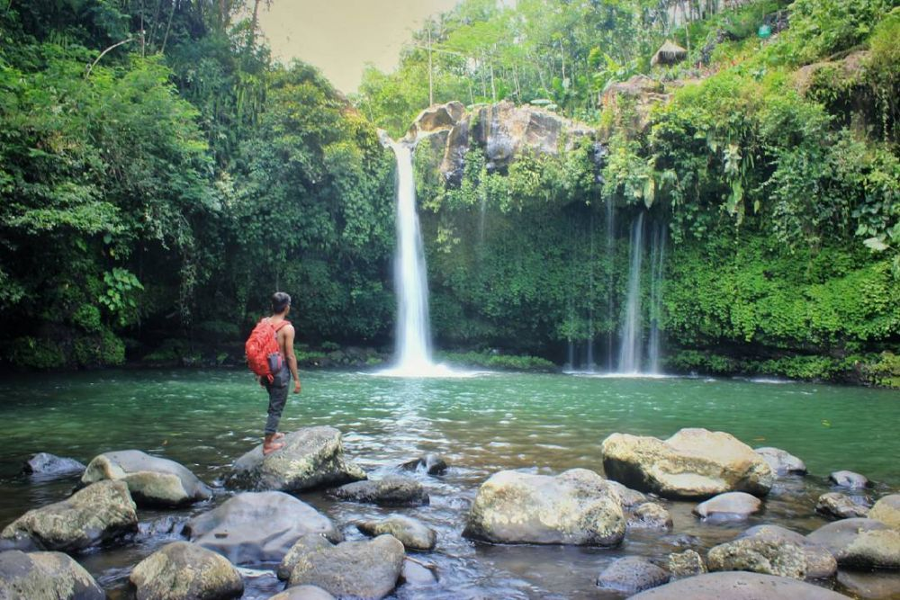

Geografis

Terletak pada 101° 11" BT - 109°35" BT dan 7°10" LS - 7°29 LS" terbentang pada altitude ± 40 – 1.500 meter diatas permukaan laut dengan dua musim yaitu musim Hujan antara April – September dan musim Kemarau antara Oktober – Maret. Secara umum Purbalingga termasuk dalam iklim tropis dengan rata-rata curah hujan 3,739 mm – 4,789 mm per tahun. Jumlah curah hujan tertinggi berada di Kecamatan Karangmoncol, sedangkan curah hujan terendah di Kecamatan Kejobong. Suhu udara di wilayah Kabupaten Purbalingga antara 23.20 °C – 32.88 °C dengan rata-rata 24.49 °C.
Purbalingga berada di cekungan yang diapit beberapa rangkaian pegunungan. Di sebelah utara merupakan rangkaian pegunungan (Gunung Slamet dan Dataran Tinggi Dieng). Bagian selatan merupakan Depresi Serayu, yang dialiri dua sungai besar Kali Serayu dan anak sungainya, Kali Pekacangan. Anak sungai lainnya yaitu seperti Kali Klawing, Kali Gintung, dan anak sungai lainnya. Ibu kota Kabupaten berada di Purbalingga, sekitar 21 km sebelah timur laut Purwokerto.
Kuliner

Makanan yang paling dikenal di Purbalingga adalah mendoan, ini adalah makanan yang dibuat dari tempe kedelai. Istimewanya, pembuatan mendoan diproses mulai dari saat membuat tempenya, jadi mendoan tak bisa dibuat dari sembarang tempe. Tempe mendoan adalah tempe tipis yang dibuat melebar/meluas. Untuk membuat mendoan, tempe ini diberi tepung yang dibumbu garam, ketumbar dan daun bawang. Digoreng sebentar sehingga masih terasa lunak, bila digoreng agak lama akan menjadi tempe "muledi" yang sedikit agak liat. Lebih lama lagi sampai kering maka disebut tempe "keripik".
Purbalingga juga dikenal sebagai tempat pabrik Slamet, yang memproduksi permen Davos sejak tahun 1931, permen ini sangat dikenal sejak zaman dulu. Oleh-oleh istimewa lainnya apalagi kalau bukan kacang mirasa. Penampilannya bolehlah gosong dan mirip kacang kulit khas pedesaan. Tapi rasanya? Banyak orang ketagihan untuk membelinya dan membawanya sebagai oleh-oleh. Berbeda dnegan kacang kulit pabrikan, kacang mirasa dibuat dengan cara merendamnya pada air sehari semalam. Keesokan harinya dilumuri garam dan dibiarkan dalam bak selama sehari semalam juga. Besoknya baru direndam air lagi selema sehari semalam. Kemudian dijemur di bawah sinar matahari, baru setelah kering disangrai dengan pasir. Jadilah kacang khas Purbalingga yang renyah dan 'kemlithik'.
Sroto (nama sebutan soto untuk wilayah Purbalingga dan Banyumas) juga terkenal. Perbedaan mendasar sroto dengan soto pada umumnya terletak pada sambalnya yaitu sambal kacang yang pedas legit, menggunakan ketupat bukan nasi, serta ditaburi suwiran daging dan remasan kerupuk. Beda Sroto Sokaraja dengan Sroto Purbalingga juga bisa dilihat dari kerupuknya. Umumnya Sroto Sokaraja menggunakan kerupuk warna warni, sedangkan Sroto Purbalingga menggunakan kerupuk merah putih. Sroto Purbalingga yang kesohor terutama sroto kriyiknya. Di sini setelah daging ayam disuwir untuk sroto maka "rongkong"nya (tulang dada) digoreng kering dan disajikan sebagai lauk sroto. Rasanya garing dan kriyik-kriyik, itu sebabnya disebut sroto kriyik. Selain sroto kriyik, ada juga sroto so yang tak kalah nikmat. Sroto So ini mirip pada umumnya sroto khas Purbalingga, hanya saja ada tambahan daun melinjo atau yang biasa disebut 'so' yang menambah cita rasa unik makanan berkuah ini, lokasinya sekitar 4 KM dari pusat kota yaitu berada di desa Bojong. Sroto khas lainnya biasa disebut sesuai lokasinya, seperti Sroto Bancar dan Sroto Jatisaba.
Ada lagi makanan khas yang sering diburu orang ketika bertandang ke Purbalingga, yaitu Buntil. Buntil ini dibuat dari kukusan daun keladi, daun pepaya atau daun singkong yang diisi parutan kelapa dicampur ikan teri, diberi bumbu bawang, cabai, lengkuas, asam, garam, dsb. Cara penyajiannya, buntil disiram kuah pedas berbahan utama santan dan cabai merah, lengkap dengan cabai rawit dibiarkan utuh, tidak diiris. Sangat nikmat dimakan saat hangat dengan nasi yang baru tanak. Untuk oleh-oleh, sebaiknya beli Buntil yang tidak bersantan, karena bisa tahan sampai seminggu. Buntil hampir selalu tersedia di setiap pasar pagi di berbagai pelosok Kabupaten Purbalingga. Namun yang paling terkenal Buntil Pasar Kutasari. Untuk mendapatkan semangkuk buntil di Pasar Kutasari, orang rela mengantri sejak pagi.
Sate Blater juga bisa menjadi menu pilihan lain yang khas dari Purbalingga. Disebut Sate Blater karena asal muasal sate ini dari Desa Blater, Kecamatan Kalimanah. Meski sama-sama sate ayam, Sate Blater sedikit berbeda dengan sate madura atau sate ayam lainnya. Perbedaannya terletak pada cara memasaknya. Jika pada umumnya sate dibakar saat daging masih mentah, kalau sate blater sebelum dibakar harus direndam dalam bumbu rahasia racikan khas orang-orang Desa Blater, dan saat dibakarpun masih berkali-kali dilumuri bumbu yang sama. Sehingga cita rasanya memang sangat terasa hingga gigitan terakhir. Proses memasak yang berbeda, membuat sate ini juga kuat disimpan hingga tiga hari. bahkan jika disimpan di lemari pendingin bisa lebih lama lagi.
Selain makanan, Purbalingga juga dikenal dengan es duriannya yang selalu membuat kangen. Meskipun saat ini banyak yang meniru, tidak ada yang menandingi rasa khas es durian Tugu Bancar racikan Pak Kasdi. Di dalam semangkuk es durian, daging buah durian disiram gula merah cair dan santan kelapa segar, ditambah serutan es batu hingga menggunung. Tak berhenti sampai disitu, gunungan es durian itu masih disiram susu kental manis dan sesendok cokelat panas.
Ada juga kue Nopia, asalnya juga dari Purbalingga, sekitar tahun 50-an keluarga Ting Lie Liang memulai usaha bikin penganan nopia yang juga disebut telor gajah. Bantuknya putih dari tepung terigu berisi gula Jawa. Ada juga nopia mini yang biasa disebut mino. Baik nopia maupun mino tersedia dalam berbagai rasa, seperti rasa durian, rasa nanas, rasa stroberi dan yang rasa yang paling unik adalah rasa bawang merah.
Wisata
Selain kulinernya yang banyak, purbalingga juga tidak kalah bersaing untuk hal pariwisata, banyak tempaat wisata yang sering dikunjungi baik oleh warga lokal, maupun dari luar daerah. Objek wisata di kota purbalingga tergolong wisata yang masih asri dan berhubungan dengan alam.
Curug Nini

Curug Nini, walaupun air terjunnya tidak terlalu tinggi, di bawah curug ini terdapat sumber mata air yang tidak pernah kering. Menurut ceritera rakyat setempat, di sini terdapat ikan yang tinggal kepala dan durinya saja.
Sanggaluri Park

Sanggaluri Park, berada di Desa Kutasari Purbalingga sebuah wahana wisata edukasi yang terdiri dari Museum Uang berisi koleksi uang-uang kuno dari Indonesia dan mancanegara, Museum Serangga dengan berbagai jenis koleksi serangga dari Indonesia, Museum Wayang dan Artefak,Wahana Edukasi Narkoba, Taman Reptile, taman Burung yang berada di satu kawasan Taman Buah Kutasari.Sanggaluri juga memiliki wahana Outbound anak dan umum, Simulasi Manasik Haji, pengawetan serangga, pembedahan reptile dan paket kemah wisata ( Sanggaluri Campsite )
Curug Ciputut

Curug Ciputut, yang memiliki ketinggian 30 m, panorama alamnya sangat indah dan air curug ini juga tidak pernah kering. Di objek wisata alam ini sering di kunjungi wisatawan remaja pada saat libur. Medan menuju Curug Ciputut ini agak sulit. Justru karena tingkat kesulitan menuju lokasi wisata ini sering dijadikan sarana petualangan bagi wisatawan remaja.